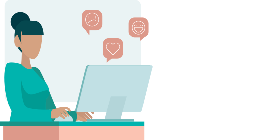

Sådan tager du imod feedback
Det kan være svært at være den der skal tage imod feedback, Derfor er der her sammensat nogle gode råd til hvordan du bedre kan tage imod den feedback du får.
Der er desuden vigtigt ikke at tage feedbacken personligt. Gør vi først det, kan det nemt overskygge alt
andet og kan hurtigt gøre en ellers god dag rigtig træls og vi kan blive kede af det eller fornærmede.
Uanset hvilken feedback man modtager, kan det være svært at forstå og det er ikke sikkert man tager imod
det som afsenderen havde til hensigt. Gå ikke i forsvar selvom det kan være svært hvis man føler sig
kritiseret. Det ligger helt naturligt til os mennesker at forsvare os selv. Gør vi det når vi modtager
feedback, risikerer vi at gå glip af rigtig mange lærerige kommentarer og ideer som kunne udvikle os som
studerende, undervisere eller noget helt andet. det er derfor det allerførste skridt når vi sidder i
modtagerenden at lytte og lære frem for at forsvare sig.
Hvad gør vi så, efter vi har fået feedback? Det er vigtigt vi overvejer, hvad vi har modtaget af
feedback og investerer tid i at forstå de kommentarer vi har fået og kan lave en plan for hvordan det vi
kan bruge det. Altså hvad kan vi ændre og hvordan.
Når vi lytter til de kommentarer andre har til vores arbejde og vi bliver gjort opmærksom på områder som
kunne forbedres, skal disse ses som muligheder for at vi kan udvikle os. Følg eventuelt op på den
feedback du får hvis der er noget du er i tvivl om eller gerne vil have uddybet. Selvom ordet kritik som
oftest er negativt ladet, er hensigten bag oftest positiv og velmenende.
Vi skal huske på at feedback er godt for alle, Dem der giver feedback har mulighed for at gøre os
opmærksomme på eventuelle fejl og misforståelser og derudover føle sig hørt og inkluderede. Vi som
modtagere har mulighed for at se den feedback, vi får mulighed for input og udvikling.
